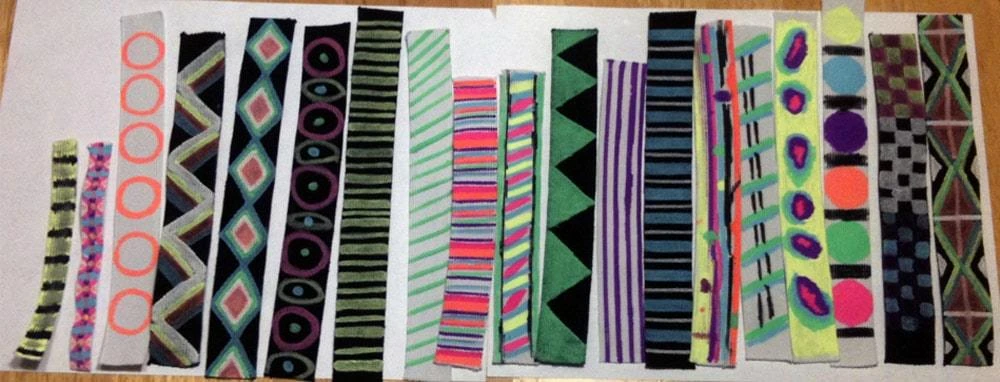
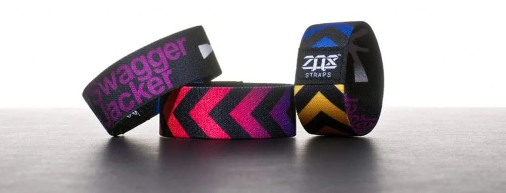
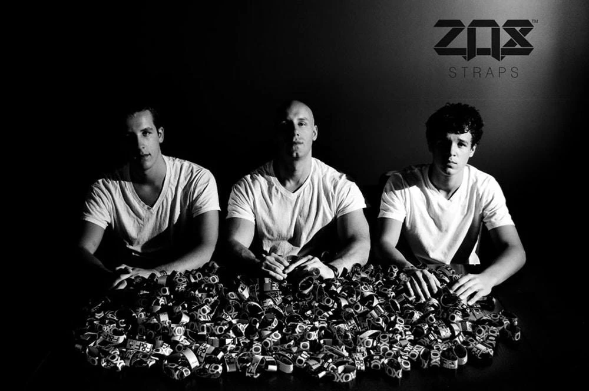
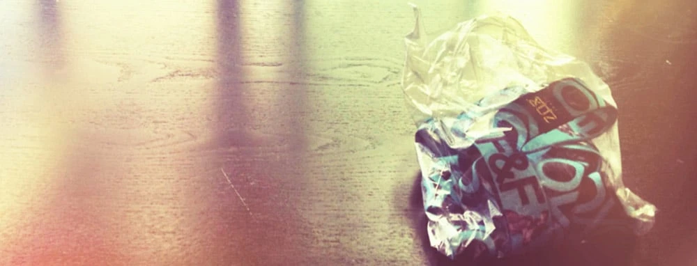

Limited edition, collectible works of art for your wrist.
.svg)

Limited edition, collectible works of art for your wrist.
Growing up, my mom said I yelled too much when I got excited.
It was true.
I still remember her buying me a pair of LA Gears and the UPS guy stopping by our house to deliver them - I was out front playing with a boomerang that loved to get stuck on the roof. As she walked out to show me, I could sense the new sneakers and flipped out with excitement, yelling like the Youtube video of the child discovering a Nintendo 64 as his Christmas present. I finally had a pair of LA Gears, and life was complete.
Well my mom decided to punish my obsessive yelling (with excitement, in my defense) that day by delaying the enjoyment of my awesome new kicks until the next morning. I got up at the crack of dawn and opened the box for the first time... jackpot. I finally had a pair of shoes the other kids at my school didn't and man... it felt good.
I've always been a collector of cool little things - basketball cards, Desert Storm cards, Hot Wheels and yes, even Pogs. Yes, in case you are wondering, everyone was super jealous of my legit Pog collection.
What's fun to me about collecting is discovering those rare pieces that nobody else has. I'd buy, sell, trade, and barter for my favorites then get protective cases to ensure they stayed in absolutely perfect condition.
As I got older, my love for collectibles grew into something I had always wanted to have: Lots of sneakers. While all of my 'grown up' friends started getting real jobs, collecting watches, fast cars and nice apartments in the city, I just wanted some sweet shoes.
Now if you love shoes, you also love making sure things match. I kid you not, my obsession with this little detail changed my life.
In mid 2010 I was sitting at my apartment on a Saturday afternoon, looking at a pair of lemon lime colored Nikes I was planning on wearing later that day. I wanted to find something small to match the shoes without being obnoxious (because lemon lime colored shoes aren't crazy enough on their own) and I thought about how cool it would be if there was a wristband that matched. I decided take a trip to the fabric store to buy some elastic and make a wristband of my own. I bought a few yards of black and a few of white, some silver thread and some paint markers, then headed home. I still remember drawing on the elastic for the first time and being so excited that it actually worked. I did some simple neon yellow lines, then sewed it together and ran out the door. As time went on, I'd continuously have people ask me about it. Most thought it was a slap bracelet until I showed them how it would stretch. It was comfortable too, I never left home without it. Even on days that I had to look a little more professional, I'd flip it over to the all black side and wear it instead of a watch.
I flew back to visit my family for the holidays at the end of 2010, wearing my Strap as usual. When I got to Michigan, both my brothers asked what was on my wrist.
I still remember Jordan saying "bro that's fresh!" I laughed that the term "fresh" was apparently back in style and decided to take them to a fabric store so we could all make some wristbands together. That night my entire family sat down at the kitchen table and started drawing up the craziest things we could think of. Admittedly, our crazy ideas basically consisted of geometric shapes, but it was a great start.

My mom had a ridiculously hard time sewing the wristbands together as they were so small and intricate, but got all of them done after a few hours of failed attempts. My dad suggested we call our new invention Zox Straps. We all laughed at the time, but he insisted it would catch on so we went with it. He now claims he owns 1% of the company because of this.
The next day, my brothers both wore their newly created wristbands to school for the first time. I remember as I was sitting on the couch when they got back, they ran in the door with excitement, saying that we had to figure out how to make more because all their friends wanted some.
That's when it hit me - we had just invented a whole new style of wristband.
We sat down to brainstorm, taking notes of what this project meant to us. We wanted it to be collectible, collaborative, philanthropic and a completely epic experience. Each of those things, to this day, is still a pillar of who we are -
A brand - that makes me super happy.
We took ideas from our favorite things and integrated them into our brand: The golden ticket from Willy Wonka, the packaging from a pack of basketball cards (but resealable to keep it fresh!), the nicknames people give sneakers and the VIN numbers on cars.
We borrowed a Pantone colorbook from a friend and got to work on our first printed sample, the original 5 color "Swagger Jacker". When the samples were finished, each of us wore one around to see what people thought - the response was overwhelming. We realized there was real potential for this to grow into something truly meaningful.

Our first actual release was called F&F, which stood for Friends & Family. We made 1,000 of them in total, each individually numbered on the tag.
On the opposite side of the tag we stitched our logo - numbers 0001 - 0100 were stitched in gold thread, the rest in white. Here's a photo of all three of us trying to be cool at my desk the day they were finished circa mid 2011.

Well now we had a product that we loved, but there's not really an instruction manual on what to do next. So we did what any awesome person would do and decided to share them with people we cared about. We used to bring them everywhere we went in little sandwich bags. People loved 'em! After a while, my friends started asking me if they could have some to give to people they met because they kept giving their own away, right off their wrists.

This was a key moment for me because it started the concept of what is now our VIP group; brand ambassadors that love the brand as much as I do and really just want to spread the word.
So the F&F went super fast, but we weren't sure if that was just because they were free or if people were really digging what we were doing. At that point, we still didn't have a website and to be honest, I'm just a nerd without nerd skills. I can't code to save my life.
After waiting over four months for a friend to help me build our site I decided to take matters into my own hands. I worked on our site for 17 hours straight before it was finished and I passed out; it was awesome. During that 17 hour run, I actually designed a Strap called Night Owl, as a tribute to other folks that stay up late working on something they love.
Looking back now I realize that it was that Strap that really set the tone for how we named most of our designs going forward, they had to serve a purpose. Some names ended up being tied to memories that were important, others would be for motivation or encouragement. That night really set the tone for our business as a whole - we were pushing ourselves every day to be better.
We decided to ease into our second Strap called "Double Dutch" by packing two Straps in a single bag without telling anyone. Right before we put them for sale on our site, I realized it might be a good idea to put a little note inside the bag as well so they realize why they got two: One to wear, one to share. This is the birth of what's now affectionately known as the Collector's card.
As much as I'd love to say we're all grown up now, it's just not true. All 3 of us are just huge kids that absolutely LOVE what we do. I will say this though: Watching both of my brothers grow into young men of character has been seriously amazing; I'm the proudest big bro you'll ever meet.
Personally - I wake up every single day so stoked to craft another incredible experience for each and every one of you. You're on my mind 24/7 and I continually push the boundaries here at ZOX because I want nothing but the very best for you. I always tell Brandon and Jordan that as long as we're making folks smile, we're doing things right.
Until next time!
- Jason
PS - we used to have a small video here from 2014 of our story. I realized a lot has changed since then, so I made a new video. Enjoy!
.